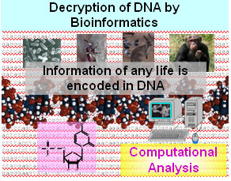

NCBI
citeulike
LinkedIn
YouTube
twitter

Recent development of experimental technologies for molecular biology
enabled us to obtain huge amount of information inside a cell. However
without proper analyses and interpretation, such information is just a
huge mess. Computer can greatly assist us to analyze such information to
obtain new insights into life. The research field which aims to
understand biological phenomenon throught computational analyses is
called bioinformatics. In our bioinformatics researches, we are
especially focusing on DNA Sequences, i.e. Genomic sequences which carry
genetic information, RNA sequences, which are shown to have important
role in gene regulations, and protein sequences, which have main role in
cellular reactions. We are also interested in interactions among them in
order to understand how cellular components are organized.
Our mission is to develop a method to discover novel biological
knowledge from these data.